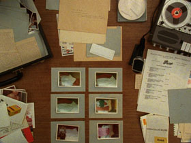

Szenario
Philip Widmann, Karsten Krause – Deutschland 2014 – 89 Min. 
Sc: Philip Widmann – COP: Karsten Krause – E: Philip Widmann – S: Tom Schön – P: Krause & Widmann und Meike Martens
Mit Cora Frost, Gustav Peter Wöhler (Sprecher), Lisa Arndt, Odine Johne
digital – deutsch
A woman‘s voice and a man‘s voice speaking in unison: „A woman called Monika, and a man called Hans. Hans documents in writing that Monika has threatened him–her boss, employer and lover–with the withdrawal of her sexual favors if his wife doesn‘t apologize to her.”
The contents of a black briefcase lead us into a superficially well-ordered life in West Germany in 1970, in a city that can be seen as representative of the entire country. In this briefcase: the meticulous documentation of an affair between the small business owner Hans and his secretary Monika. A detailed protocol of their sexual activities leaves a trail through the field of infinite possibilities and finite probabilities of leading a different life under the same circumstances. – Philip Widmann, Karl Krause
Sunday 12/10 8.30 p.m. Werkstattkino – Guests: Philip Widmann und Karsten Krause
Philip Widmann, born in 1980 in West Berlin, studied Cultural Anthropology, Ethnology, and American Studies at the University of Hamburg and attended the Documentary Film Class at the Hamburg University of Fine Arts. Widmann has been a member of the independent film collective LaborBerlin e.V. since 2009.
Karsten Krause was born in 1980 in Freiburg, and earned a degree in Visual Communication at the Hamburg University of Fine Arts in 2010. He lives and works in Hamburg and Berlin.
Films (Widmann): Destination Finale 2008 (4. UX) – Die Frau des Fotografen 2011 (mit K. Krause) – Szenario 2014 (mit K. Krause)
Films (Krause): Die Zeit, die es braucht 2008 – You and Me 2010 – Die Frau des Fotografen 2011 (mit P. Widmann) – I AM HERE 2013 – Szenario 2014 (mit P. Widmann)